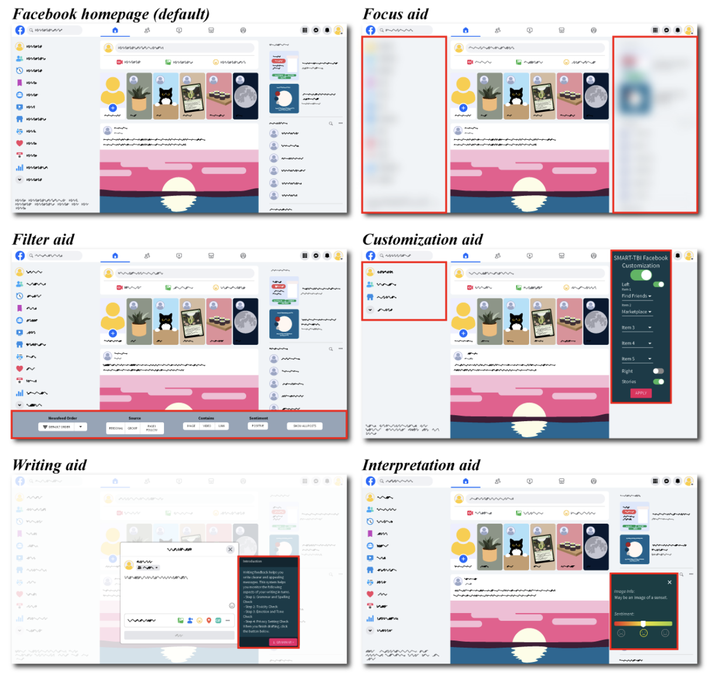

Research Project · JMIR Rehabilitation and Assistive Technologies
Supporting Individuals with Traumatic Brain Injury (TBI) Through the Use of Digital Aids for Social Media: An In-the-Wild Study

Abstract
Digital social media aids are features that enhance accessibility to social media for users with disabilities. Adults with traumatic brain injury (TBI) want to engage in social media but encounter significant barriers due to TBI-related cognitive and communication challenges. We previously collaborated with adults with TBI to develop five aids implemented as Chrome extensions that modified user interface functions and visuals on Facebook. The present study tested the use of the five aids by a novel group of adults with TBI longitudinally and in naturalistic settings. We recruited 39 adult Facebook users with TBI to take part in an approximately one-month within-subject evaluation study. Each aid was used for three days, followed by an evaluation and a two-day no-aid period, in randomized order. Users reported the aids to be beneficial, especially aids that reduced visual clutter and information overload. Users also reported increased life satisfaction after using the aids (P=.02). These results provide proof of concept for the types of digital aids that could improve access to social media for users with TBI. We advocate including aids like these across all social media platforms so users with TBI can access the benefits of social media engagement with fewer barriers.Adults with brain injuries often want to use social media like Facebook, but it can be hard because of memory, focus, or communication challenges related to their injury. We had previously worked with adults with TBI to build five browser tools that change how Facebook looks and works to make it easier to use. In this study, 39 adults with TBI tried all five tools over about a month, using each one for three days before answering questions about it. People said the tools were helpful, especially ones that cut down on clutter and too much information. They also reported feeling better about their lives after using the tools. Our results show that these kinds of tools can make a real difference, and we think all social media platforms should offer features like these.
